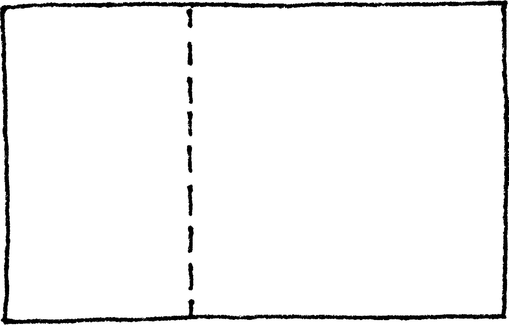
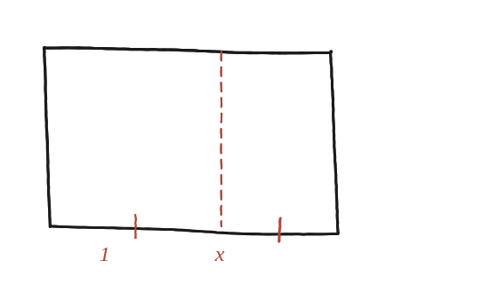

Un rectangle auri té la propietat que, en treure-li un quadrat, el rectangle que queda és semblant a l'original. Quines són les proporcions d'un rectangle auri?

"Semblant" és tota la informació que hi ha
L'enunciat no dona cap altra condició més enllà d'aquesta: el rectangle que queda després de treure el quadrat ha de tenir la mateixa proporció entre costats que el rectangle original. No hi ha cap mida fixa a l'enunciat —la resposta ha de ser una raó, no una llargada concreta.
Noms per als costats
Amb el costat curt igual a 1 i el llarg igual a x (x>1): en treure'n el quadrat de costat 1, el que queda és un rectangle de costats 1 i (x−1) —el tram del costat llarg que sobra un cop retallat el quadrat.

La mateixa proporció, dues vegades
Que el rectangle petit sigui semblant a l'original vol dir que la raó costat llarg / costat curt ha de ser la mateixa als dos rectangles: al gran, x/1; al petit, 1/(x−1) (el seu costat llarg és 1, el curt és x−1). Igualant-les: x/1 = 1/(x−1).
Resoldre-la: exactament la mateixa equació de q33
Desenvolupant: x(x−1)=1 → x²−x=1 → x²=x+1. És exactament la mateixa equació —lletra per lletra, només canviant el nom de la incògnita— que ja va aparèixer a la Qüestió 33 amb la diagonal del pentàgon (allà, d²=d+1). La solució positiva és x=(1+√5)/2=φ≈1,618, el nombre auri.
Un rectangle auri té costats en la proporció 1 : φ, amb φ=(1+√5)/2≈1,618 el nombre auri. Surt de traduir "el rectangle petit és semblant al gran" en una equació de proporcions (x/1=1/(x−1)) que, un cop desenvolupada, dona exactament la mateixa identitat x²=x+1 que ja havia aparegut —amb un altre nom, d, i en una figura completament diferent— amb la diagonal del pentàgon a la Qüestió 33.
Comprovació
Amb x=φ≈1,618: x/1=1,618, i 1/(x−1)=1/0,618≈1,618 —coincideixen, confirmant la proporció.